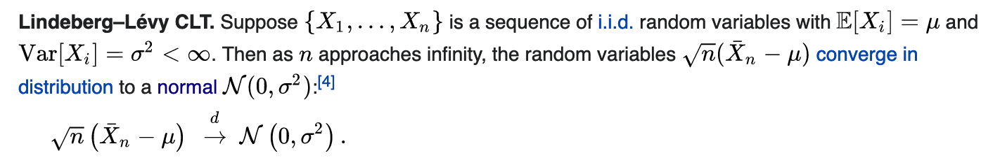
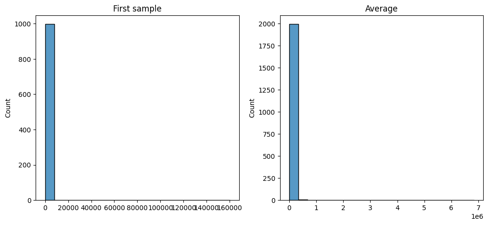
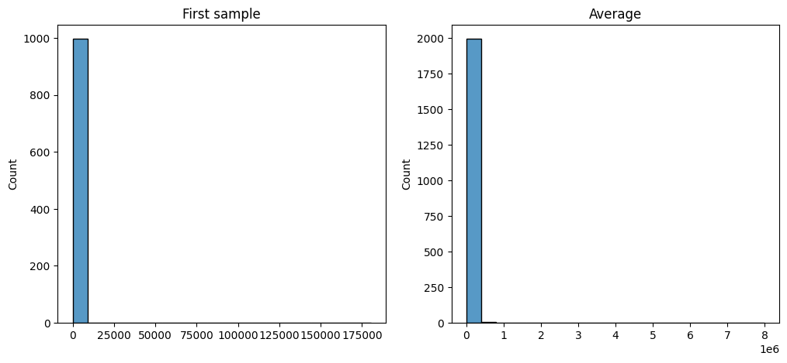
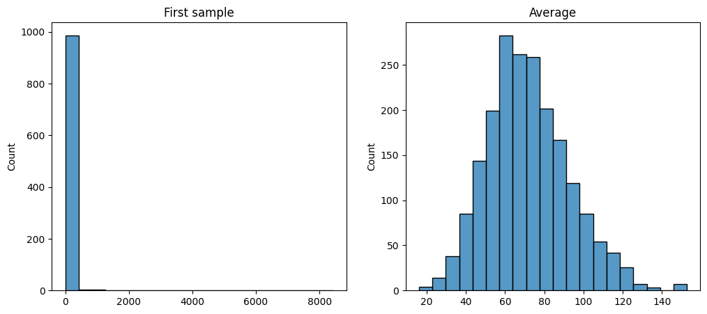
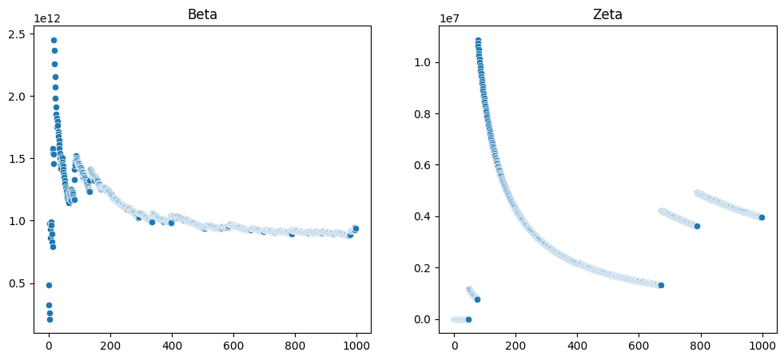

from IPython.display import display, Image as dImage
from PIL import Image
import scipy
import seaborn as sns
import matplotlib.pyplot as plt
import numpy as npAssumtions of CLT
math
clt
ab
The Central Limit Theorem serves as the foundation for many aspects of statistics, including the z-test, student’s t-test, and Welch’s t-test. But, how frequently do you consider its assumptions? Have you ever verified them?
Even a minor deviation from these assumptions can result in a situation where the methodology becomes unusable.
Mathematical concepts are often written in a complex way that can be challenging to decipher and understand. That’s why my aim is to break down these core principles and present them to you in simple, clear English with examples.
Let’s start with a definition from wikipedia:
path="./resources/images/screen4.png"
display(Image.open(path))
it turns out 3 major assumptions are hidden in 8 symbols: “<∞” and “i.i.d.”:
- finite variance
- identicaly distributed
- independent
Finite variance:
Assuming all variance in business scenarios is finite may be easier, but reality is more complex. Infinite variance basically means your distribution is skewed by rare but large values. Can we just limit our data to the “global monetary supply” and ignore this? Let’s explore!
If you’re an analyst in today’s world, you’re likely involved in marketplaces. These are known for their sales or revenue distributions often following a Powerlaw. This isn’t exclusive to marketplaces; there are many examples of this distribution. You can learn more about it Here and Here
Your task is to analyze the distribution of sales. For our example, we’ll generate a discrete sample from Zipf
Finding the distribution of the mean is straightforward. We create 1000 sellers (left picture), calculate their average sales and repeat this 2000 times (from the same distribution). According to the Central Limit Theorem (CLT), we expect the mean to follow a normal distribution (right picture).
N = 1000
num_samples = 2000
dat = scipy.stats.zipf.rvs(a=1.6, size=(N, num_samples))
d = dat.mean(axis=0)
fig, ax = plt.subplots(1,2, figsize=(12, 5))
g = sns.histplot(dat[:,0], ax=ax[0], bins=20)
g.set_title("First sample")
g = sns.histplot(d, ax=ax[1], bins=20)
g.set_title("Average")Text(0.5, 1.0, 'Average')
print(f"mean shapiro p-value: {scipy.stats.shapiro(d).pvalue:.2f}")mean shapiro p-value: 0.00It doesn’t appear to be normal. Now, let’s ‘cap’ it by the world’s population.
N = 1000
num_samples = 2000
dat = scipy.stats.zipf.rvs(a=1.6, size=(N, num_samples))
dat[dat > 8_000_000_000] = 8_000_000_000
d = dat.mean(axis=0)
fig, ax = plt.subplots(1,2, figsize=(12, 5))
g = sns.histplot(dat[:,0], ax=ax[0], bins=20)
g.set_title("First sample")
g = sns.histplot(d, ax=ax[1], bins=20)
g.set_title("Average")Text(0.5, 1.0, 'Average')
It’s still not normal. Evidently, assuming a finite monetary supply is insufficient.
N = 1000
num_samples = 2000
dat = scipy.stats.zipf.rvs(a=1.6, size=(N, num_samples))
dat[dat > 10_000] = 10000
d = dat.mean(axis=0)
fig, ax = plt.subplots(1,2, figsize=(12, 5))
g = sns.histplot(dat[:,0], ax=ax[0], bins=20)
g.set_title("First sample")
g = sns.histplot(d, ax=ax[1], bins=20)
g.set_title("Average")Text(0.5, 1.0, 'Average')
Applying a more reasonable cap may help, but there’s no universal guideline for selecting one.
How do you verify if your distribution has finite variance? Unfortunately, there’s no test for that. In real-world scenarios, you’re always working with a finite sample, and a finite sample always has finite variance. However, the underlying distribution might not always have finite variance.
Cumulative variance trick:
When you compute cumulative variance, you should observe convergence at some point (as shown in the left image). In my experience with infinite distributions, you’ll notice “jumps” as illustrated in the right image.
dat_beta = scipy.stats.expon.rvs(scale=1_000_000, size=(1, N))
dat = scipy.stats.zipf.rvs(a=1.6, size=(N, num_samples))
variance_beta = []
variance_zipf = []
for i in range(2, N):
variance_beta.append(np.var(dat_beta[0, 0:i]))
variance_zipf.append(np.var(dat[0:i,0]))
fig, ax = plt.subplots(1,2, figsize=(12, 5))
g = sns.scatterplot(x=range(len(variance_beta)), y=variance_beta, ax=ax[0])
g.set_title("Beta")
g = sns.scatterplot(x=range(len(variance_zipf)), y=variance_zipf, ax=ax[1])
g.set_title("Zeta")Text(0.5, 1.0, 'Zeta')
Identical distribution:
Now, let’s say you’ve decided to join a startup that’s in a hyper-growth phase (first year 268%). You can find more details about this here. You’re interested in testing something that could impact the number of orders per hour.
It’s common to model the number of events in a given time period using the Poisson distribution. So, let’s say we have an average number of 1.5 orders per hour, and a weekly growth rate of 2%.
first_week_mu = 1.5
growth_rate = 1.02
res = []
for week in range(52):
first_week_mu *= growth_rate
res.append(scipy.stats.poisson.rvs(mu=first_week_mu, size=7*24))
res = np.array(res)
fig, ax = plt.subplots(1,3, figsize=(12, 5))
g = sns.histplot(res[0,:], ax=ax[0])
g.set_title("First week data")
g = sns.histplot(res[51,:], ax=ax[1])
g.set_title("Last week data")
g = sns.histplot(res.mean(axis=1), ax=ax[2])
g.set_title("Average")print(f"mean shapiro p-value: {scipy.stats.shapiro(res.mean(axis=1)).pvalue:.2f}")mean shapiro p-value: 0.01As you can observe, it doesn’t exhibit a normal distribution.
Independent:
No test here :(
Key Takeaways:
- Infinite variance occurs more frequently than you might think. Stay aware.
- It’s important to understand the data generating process, as this can provide some level of guarantee not only for independence but also for identically distributed data.
- Know your data. This knowledge is key to effective analysis and interpretation.
Happy coding!